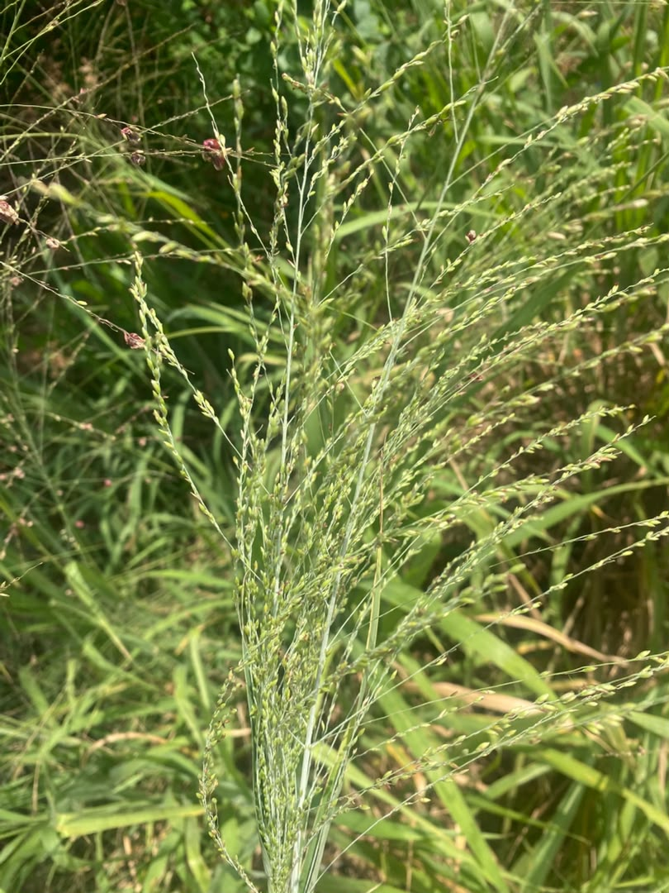

Savez-vous comment la vie a pris racine sur la terre ferme ? Naviguez à travers les grandes périodes géologiques pour comprendre comment les premières algues sont devenues des arbres majestueux, jetant ainsi les bases de toute l'agriculture moderne.
Thalle, vie aquatique
1 milliard d'années
02Cuticule, stomates, rhizides
470 Ma · Ordovicien
03Vaisseaux, lignine, racines
430 Ma · Silurien
04Pollens, graine nue
370 Ma · Dévonien
05Fleur, fruit, pollinisation par le vent
Plantes à fleurs
06Fleur, fruit, pollinisation par les insectes
Plantes à fleurs
Pour survivre hors de l’eau, les végétaux ont dû surmonter quatre contraintes majeures. Ils devaient d’abord éviter de se dessécher, c’est-à-dire limiter la perte d’eau dans un milieu aérien. Ils devaient ensuite tenir debout, donc acquérir une structure capable de les soutenir hors de l’eau. Ils devaient encore se reproduire sans eau libre, alors que la fécondation dépendait auparavant d’un milieu aquatique. Enfin, ils devaient protéger leurs graines, afin d’assurer la survie et la transmission de l’embryon. Au fil des millions d’années, les végétaux ont développé des innovations décisives pour répondre à ces défis : la cuticule cireuse, qui limite l’évaporation et protège contre la dessiccation ; les vaisseaux, qui assurent la conduction de l’eau et des nutriments tout en participant au soutien de la plante ; et le pollen, qui permet le transport des gamètes mâles et la reproduction sans eau libre. Cette transition évolutive constitue le socle indispensable sur lequel reposent toute l’agriculture moderne et l’alimentation humaine.
Les photos prises sur le terrain.


